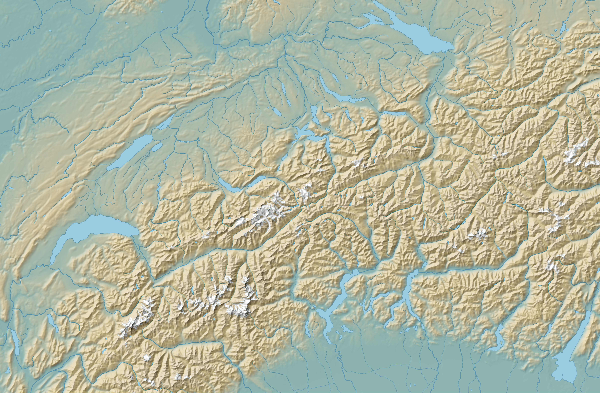

Recently Ive been fascinated by old atlas maps, specifically Eduar Imhof's classroom atlases. I've realized over time that I learn best by doing, so I thought attempting to replicate a map in this style digitally would be good practice and a fun project to attempt. The map I chose to replicate was Eduard Imhof's Overview Map of Switzerland from his Middle School Atlas.
The things that I like most from old atlas maps like these are the shaded relief and the colors they use to represent elevation. To replicate the manual relief in the reference I used Terrain Sculptor to generalized my terrain. I used something close to the default settings.Then I draped the hypsometric tint on it using similar colors to Imhof's. For almost all of the map featured I using EuroGeographic datasets for roads,hydrography, phycical features, and national boundaries. Their data was lacking mountain peaks however, so I pulled those from OpenStreetMaps. The rest of the process was styling these layers and finally adjusting the labels in Inkscape.
{kind=link}
Tools: QGIS, Terrain Sculptor, GIMP, Inkscape
Data Sources: SRTM, EuroGeographic, OpenStreetMaps